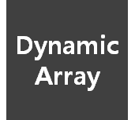
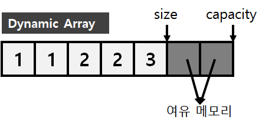
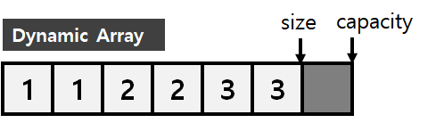
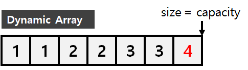

#동적 배열 (Dynamic Array)
#1 동적 배열이란?
#2 resize()
#3 append()
#4 재할당
* 개인적인 공부 내용을 기록한 글 이기에, 잘못된 내용이 있을 수 있습니다.
#1 동적 배열이란?
동적 배열 (Dynamic Array) 는 가장 기본이 되는 선형 자료 구조인 배열 (Array) 을 이용해 만들어 낸 별도의 자료구조, 배열의 특성을 그대로 이어받는다.
* 배열의 특성이란?
1. 배열의 모든 원소들은 메모리의 연속된 위치에 저장된다.
2. 특정 위치의 원소의 값을 반환하거나, 변경하는 연산은 O(1)의 시간 복잡도를 가진다.
그러나, 동적 배열은 배열의 특성과 함께 다음 특성들도 추가로 가진다.
* 동적 배열 만의 특성
1. resize() 연산을 통해 배열의 크기를 변경이 가능하며, N에 비례하는 시간이 걸린다.
2. append() 연산을 통해 배열 맨 끝에 원소를 추가하는 것이 가능하며, 상수 시간이 걸린다.
#2 resize()
resize() 연산을 구현하는 방법은 간단하다. 단순히 새 배열을 동적으로 할당 받아서, 기존 배열의 원소들을 새로 할당받은 배열에 복사 시킨 뒤, 포인터가 새로운 배열을 참조하도록 변경하면 된다. 이러한 방식을 사용하면, O(N)의 시간 복잡도로 resize() 연산을 구현하는 것이 가능하다.
int size; // 현재 배열의 크기
aryElementType* aryp; // 새로운 배열을 참조 할 포인터#3 append()
append() 연산을 호출할 때 마다 resize() 연산을 호출해 버리면, 상수 시간이 아닌 O(N) 시간 복잡도를 가지고 말아 버린다.
append() 연산을 구현하는 방법은 여유분 메모리를 미리 할당 받아 두는 것이다.

실제 원소의 수를 size , 여유 메모리를 포함한 할당받은 메모리의 크기를 배열의 용량 capacity 로 표현한다. 이렇게 여유 메모리를 미리 배열에 할당시켜 두면 append() 연산을 수행할 때 size의 값을 1 늘리고 그 위치에 새로운 값을 할당 시키기만 하면 된다.

ary[size++] = newValue;#4 재할당
그런데 만약 size의 값과 capacity의 값이 일치해서 더 이상 size의 값을 늘릴 수 없는 상황이 오면 어떻게 해결할 것인가?

해결 방법은 더 큰 새로운 배열을 동적 할당을 받은 뒤, 기존 배열의 원소들을 모두 복사하고, 새로운 배열을 가리킬 포인터와 바꿔치기 하는 것이다. 이러한 과정을 재할당(reallocate) 이라고 부른다.
// size와 capacity값이 동일한 경우
if (size == capacity) {
// 정해진 값 M 만큼의 새로운 배열을 새로 할당한다.
int newCapacity = capacity + M;
int* newArray = new int[newCapacity];
// 기존 배열의 원소들을 복사한다.
for (int i = 0 ; i < size ; ++i
newArray[i] = array[i];
// 기존 배열을 삭제한 뒤 , 새로운 배열로 바꾼다.
if (array) delete [] array;
array = newArray;
capacity = newCapacity;
}
// size의 값을 1 늘리고, 새로운 값(newValue)를 추가한다.
array[size++] = newValue;하지만 위와 같은 방법으로 미리 정해둔 값(M)을 늘리는 방식으로 재할당을 구현하면, 문제가 발생한다. append() 연산을 여러번 하다 보면 필연적으로 재할당이 일어날 수 밖에 없고 그러하면, 상수 시간의 시간복잡도를 갖지 못하기 때문이다.
단순히 M의 값을 크게 늘리면 되지 않을까? 라고 생각할 수 도 있겠지만, 만약 M의 값을 10000 으로 설정했다고 가정하면 10개의 원소를 가지는 배열을 정의 한다고 해도 10000개의 공간을 할당 받아야 하기 때문에 매우 비효율 적이다.
상수 시간에 append() 연산을 구현하는 팁은 현재 가진 원소의 개수에 비례한 여유분 메모리를 확보하는 데 있다.
만약 배열의 원소의 개수가 2개라면, 4개의 메모리 값을 배열의 원소의 개수가 4개라면, 8개의 메모리 값을 확보해 두면 된다. 이렇게 하면 M을 지정해 두는 방식보다 매우 효율적이며, 일련의 과정을 무한히 반복 했을 때 평균적으로 append() 연산에 드는 시간 복잡도가 O(1) 이 되게 된다.
# 마치며..
사실 동적 배열 (Dynamic Array) 를 직접 구현하는 일은 거의 없다. 왜냐하면 대부분의 언어에서 동적 배열을 표준 라이브러리에서 제공하기 때문이다. (대표적으로 C++ STL의 Vector가 있다.) 하지만 동적 배열의 원리를 알고 사용하는 것과 , 알지 못하고 사용하는 것에는 큰 차이가 있다고 생각해서 이렇게 정리하게 되었다.